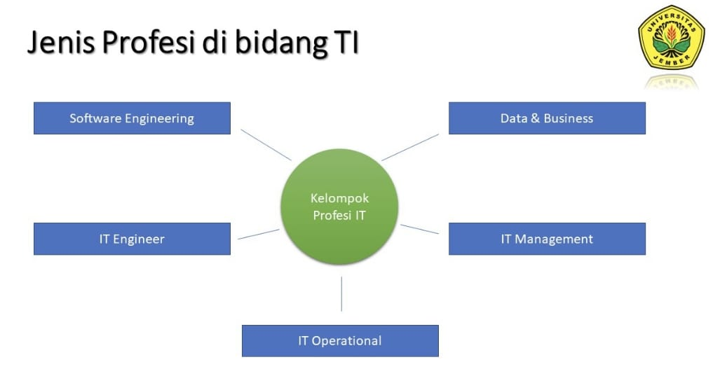

Gambar 1.4: IT Professional. (Sumber: freepik.com)
JEMBER, FAHMI PUTRA DENDI - Rangkuman materi Etika profesi pertemuan pada tanggal 12 September 2024 tentang: "Profesi IT dan Profesionalisme", Rabu (11/9/2024).
Alhamdulillah pertemuan mata kuliah Etika Profesi pada tanggal 12 September 2024 di Universitas Jember kemarin berjalan lancar. Pada pertemuan itu kami para mahasiswa diberi materi oleh Bapak Fahrobby Adnan S.Kom., M.MSI. tentang Profesi IT dan Profesionalisme.
Profesi adalah panggilan/sebutan yang membutuhkan keahlian khusus dan persiapan akademik yang panjang dan itensif. (George Reynolds, 2014)
The United States Code of Federal Regulations (The US CFR) mendefinisikan seorang "professional employee" adalah orang yang terlibat dalam pekerjaan dimana:
- Membutuhkan pengetahuan advance di bidang sains yang biasanya diperoleh melalui kursus intelektual khusus dan pendidikan institusi pendidikan tinggi atau rumah sakit.
- Mensyaratkan melaksanakan kebijakan/aturan dan penilaian atas kinerjanya.
- Didominasi karakter intelektual.
Ketiga pernyataan di atas sangat dibutuhkan oleh IT Professional dalam mengatasi dunia komputasi saat ini. IT Professionalharus ditandai dengan penyesuaian terhadap etika dan standar teknis dari sebuah profesi.
Standar teknis bergerak maju di setiap industri, namun industri TI mengalami perubahan yang sangat cepat dan luas yang menuntut IT Professional untuk mampu adaptasi dan selalu meng-upgrade keterampilan dan pengetahuan baru.
Pemikiran seorang IT Professional harus terbuka terhaadap teknologi yang dibutuhkan perusahaan dan pasar. Membangun komunikasi yang baik di tempat kerja juga tidak kalah penting.
Selain itu, seorang IT Professional juga harus melaksanakan tugas dan fungsinya secara baik dan benar, berkomitmen meningkatkan kemampuan di bidang IT, dan memahami berbagai standar kode etik profesional di bidangnya berdasarkan Body of Knowledge (BoK).
Berikut adalah ciri-ciri Profesionalisme di bidang TI:
- Mempunyai ketrampilan yang tinggi dalam suatu bidang serta kemahiran dalam menggunakan peralatan tertentu yang diperlukan dalam pelaksanaan tugas yang bersangkutan dengan bidang IT.
- Mempunyai ilmu dan pengalaman serta kecerdasan dalam menganalisis suatu masalah dan peka dalam membaca situasi cepat dan tepat serta cermat dalam mengambil keputusan terbaik atas dasar kepekaan.
- Mempunyai sikap berorientasi ke depan sehingga punya kemampuan mengantisipasi perkembangan lingkungan yang terbentang di hadapannya.
- Mempunyai sikap mandiri berdasarkan keyakinan akan kemampuan pribadi serta terbuka menyimak dan menghargai pendapat orang lain.

Gambar 1.5: Jenis profesi di bidang TI. (Sumber: Universitas Jember)